자기비파괴검사기사(구) (2008-03-02 기출문제)
1과목: 자기탐상시험원리
1. 자분탐상시험에서 맥류를 설명한 것으로 내용이 틀린 것은?
- 직류에 교류 성분이 포함된 것이다.
- 연속법과 잔류법 모두에 사용이 가능하다.
- 표면결함과 표면 근방의 내부 결함을 검출할 수 있다.
- 교류 성분이 충분히 많은 맥류는 표피효과가 상쇄되어 내부 결함의 검출능력이 우수하다.
(정답률: 알수없음)

2. 자분탐상시험에 필요한 자분의 성질을 바르게 설명한 것은?
- 작은 결함의 검출을 위해 착색제나 형광재의 두께가 두껍고 흡찹력이 낮아야 한다.
- 누설자속에 의해 생긴 자극에 대하여 흡착 성능이 뛰어나고, 형성된 자분모양의 식별 성능이 좋아야 한다.
- 시험면이 여러 가지 색을 띠고 있는 경우 형광 자분보다는 비형광 자분을 선택하는 것이 대비가 잘된다.
- 일반적으로 누설자속밀도가 낮은 경우 비형광자분을 선택하는 것이 형광자분을 선택하는 것보다 유리하다.
(정답률: 알수없음)
3. 재질이 다른 경계부에서 누설자속의 형성 원리에 대한 설명으로 옳은 것은?
- 공간에 대한 자기저항의 차이가 커진다.
- 표피효과의 차이가 커진다.
- 투자율 변화로 자기저항이 급증한다.
- 비투자율 변화로 자기저항이 작아진다.
(정답률: 알수없음)
4. 자분탐상시험에서 작업안전과 관련하여 주의할 내용과 거리가 가장 먼 것은?
- 시험체에 전기 아크가 발생되지 않도록 주의한다.
- 습식자분의 오일 등 용매가 장시간 피부에 접촉되지 않도록 주의한다.
- 자외선등에서 나오는 자외선이 직접 눈에 조사되지 않도록 주의한다.
- 자분의 비산 등을 확인하기 위해 작업자에게 TLD를 부착토록 조치한다.
(정답률: 알수없음)
5. 봉강, 강관의 탐상에서 원주방향으로 적용하여 축방향의 결함검출에 이용되는 누설자속탐상의 자화방법은?
- 코일법
- 프로드법
- 극간법
- 축통전법
(정답률: 알수없음)
6. 자속밀도와 자계의 세기와의 관계식으로 옳은 것은? (단, B : 자속밀도, H : 자계의 세기, μ : 투자율, σ : 전도율이다.)
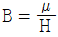
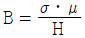
- B=μㆍH
- B=μㆍσ
(정답률: 알수없음)
7. 다음 중 시험체를 영구자석의 두 극 사이에 놓아 자화시키는 시험법은?
- 통전법
- 관통법
- 극간법
- 프로드법
(정답률: 알수없음)
8. 자분탐상시험을 한 뒤 탈자를 할 경우 탈자전류의 초기값은 어떻게 정하는 것이 좋은가?
- 검사할 때 사용한 전류값과 같게 하여 탈자를 시작한다.
- 검사할 때 사용한 전류값보다 조금 높게 하여 탈자를 시작한다.
- 검사할 때 사용한 전류값보다 조금 낮게 하여 탈자를 시작한다.
- 자기포화치가 0 에서 부터 서서히 전류값을 높여 탈자를 시작한다.
(정답률: 알수없음)
9. 다음 중 자기고무법(Magnetic Rubber Test)의 장점을 설명한 것으로 틀린 것은?
- 검사에 소요되는 시간이 짧다.
- 코팅된 시험체도 검사가 가능하다.
- 육안관찰이 어려운 부분의 검사가 가능하다.
- 피로균열의 발생과 성장과정의 관찰이 가능하다.
(정답률: 알수없음)
10. 튜브, 관 같은 부품의 종방향 용접부 내부결함을 신속하게 측정하기 위한 비파괴검사법으로 올바른 조합은?
- 자분탐상시험, 누설검사
- 초음파탐상시험, 침투탐상시험
- 방사선투과시험, 자분탐상시험
- 초음파탐상시험, 와전류탐상시험
(정답률: 알수없음)
11. 30[Oe]에서 자분모양이 나타나는 A형 표준시험편을 사용하여 시험체에 36[Oe]의 자계의 세기를 걸어주었을 때의 자화전류치[A]는 얼마인가? (단, A형 표준시험편을 시험체에 부착하고 자화전류를 증가시켰을 때 자분모양이 나타난 자화전류치는 5A이다.)
- 2
- 4
- 6
- 8
(정답률: 알수없음)
12. 다음 중 자분탐상시험으로 표면하에 위치한 결함을 검출하기 위한 가장 효과적인 방법은?
- 건식자분, 잔류법으로 측정한다
- 습식자분, 연속법으로 측정한다
- 습식자분, 잔류법으로 측정한다
- 건식자분, 연속법으로 측정한다
(정답률: 알수없음)
13. 비파괴시험에는 여러 가지 색을 이용하는데, 색채감이 인지되는 거리를 시인성이라 하며, 거리가 멀 때 사인성이 높다고 한다. 다음 중 시인성이 제일 높은 색은?
- 적색
- 녹색
- 황색
- 백색
(정답률: 알수없음)
14. 다음 중 압력용기나 저장탱크의 누설을 가동 중에 검출 할 수 있는 비파괴검사법은?
- 표면복제법
- 음향방출검사
- 초음파탐상검사
- 방사선투과검사
(정답률: 알수없음)
15. 다음 중 자분검사액의 고체 성분의 농도를 측정하는 방법으로 가장 적절한 것은?
- 부유액의 무게를 측정한다.
- 벤졸에 고체성분을 담근다.
- 부유액이 침전하도록 놓아 둔다.
- 자석에서의 인력을 측정한다.
(정답률: 알수없음)
16. 다음 중 자분탐상시험에 가장 적합한 재료만으로 조합된 것은?
- 금, 구리 및 아연
- 알루미늄 및 그 합금
- 철, 니켈, 코발트 및 그 합금
- 오스테나이트 상으로 된 스테인리스 강
(정답률: 알수없음)
17. 다른 비파괴검사법과 비교한 자분탐상검사의 장점은?
- 모든 재질의 시험체에 대하여 적용할 수 있다.
- 비자성물질이 도포되어 있어도 그 막이 얇으면 표면 불연속을 검출할 수 있다.
- 검사장비와 검사절차가 간편하여 지시모양의 판독에 경험과 숙련이 전혀 요구되지 않는다.
- 시험체 내부의 건전성을 판별하기 위해서 다른 검사방법과 병행하여 검사를 수행할 필요가 없다.
(정답률: 알수없음)
18. 원형자계를 발생시키는 원형자화법에서 자계의 세기를 증가시키는 방법으로 옳은 것은?
- 전원선을 가급적 길게 한다.
- 통전시간을 길게 한다.
- 전압을 감소시킨다.
- 전류를 증가시킨다.
(정답률: 알수없음)
19. 연강에 대한 전도율(σ)이 6.25 × 106S/m, 투자율(μ)이 4π ×10-7 × 500 H/m, 주파수(f)가 60Hz 일 때 표피의 두께(δ)는 약 얼마인가?
- 0.82mm
- 1.16mm
- 1.62mm
- 2.6mm
(정답률: 알수없음)
20. 다음 중 전류관통법을 설명한 것으로 틀린 것은?
- 전기적 접촉이 필요 없고, 아크 발생가능성이 없다.
- 연속법을 적용하는 곳에서는 가장 이상적인 방법이다.
- 지름이 큰 부품은 자화과정 중 부품의 회전과 내면에 대하여 반복적인 자화가 필요하다.
- 원통 시험체의 바깥 원주면을 검사할 때는 외경에 비례하는 크기의 충분한 전류치가 필요하다.
(정답률: 알수없음)
2과목: 자기탐상검사
21. 프로드법에서 높은 자속밀도 때문에 전극부위에 방사상으로 형성되는 자분모양을 무엇이라고 하는가?
- 전극지시
- 재질경계지시
- 단면급변지시
- 단류선에 의한 지시
(정답률: 알수없음)
22. 자분탐상용 검사액에 사용되는 분상애가 지녀야 할 특성으로 옳은 것은?
- 점도가 높을 것
- 휘발성이 작을 것
- 인화점이 낮을 것
- 적심성이 낮을 것
(정답률: 알수없음)
23. 극간법(Yoke법)에 대한 설명으로 틀린 것은?
- 선형자계를 형성한다.
- 현장 이동성이 양호하다.
- 영구자석을 이용할 수 있다.
- 자속밀도를 쉽게 변화시킬 수 있다.
(정답률: 알수없음)
24. 길이 30cm, 직경 8cm 되는 시험체를 자분탐상 코일로 선형자화하고 싶다. 코일의 감긴 수가 6회일 때 요구되는 전류 값(A)은?
- 1000
- 2000
- 5000
- 10000
(정답률: 알수없음)
25. 다음 중 자분탐상검사의 잔류법으로 사용하기에 가장 적합한 대상물은?
- 연철
- 알루미늄관
- 변압기 철심재료
- 탄소함량이 높은 철재료
(정답률: 알수없음)
26. 다음 중 가장 효과적이고 실질적인 탈자방법은?
- 발진회로를 사용한다.
- 교류 솔레노이드법을 사용한다.
- 직류를 감소시키면서 반전시킨다.
- 저전압 3륜 솔레노이드을 사용한다.
(정답률: 알수없음)
27. 다음 중 코일 내부의 자계강도 결정에 영향을 주는 인자로 가장 거리가 먼 것은?
- 코일에 흐르는 전류
- 코일의 감은 수
- 코일의 직경
- 코일의 무게
(정답률: 알수없음)
28. 다음 중 표면직하 결함(Subsur face defect)을 검출하는데 가장 검출능이 높은 자화전류의 정류방식은?
- 단상 자기전류
- 단상 전파정류
- 삼상 반파정류
- 삼상 전파정류
(정답률: 알수없음)
29. 그림과 같이 원통의 표면에 결함이 형성될 때 자분탐상검사 중 어떤 탐상법으로 하는 것이 가장 잘 검출될 수 있는가?
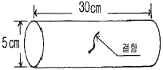
- 코일법
- 축통전법
- 전류관통법
- 자속관통법
(정답률: 알수없음)
30. 다음 중 자분탐상검사에서 자화방법의 선택시 고려하여야 할 설명으로 가장 거리가 먼 것은?
- 가능한 한 반자계가 생기지 않도록 한다.
- 자계 또는 자속의 방향이 가능한 한 시험면에 수직이 되도록 한다.
- 검출하고자 하는 결함에 가능한 한 직각으로 교차하는 방향으로 자속이 흐르게 한다.
- 대형 시험체는 시험면을 분할하여 국부적으로 자화시킬 수 있는 자화방법을 선택하도록 한다.
(정답률: 알수없음)
31. 건식자분과 프로드법으로 탐상할 때 시험체의 두께가 19mm(3/4인치)를 초과하고 프로드 간격이 152mm(6인치)일 때 적정한 자화전류(A) 범위인 것은?
- 100~150
- 200~350
- 400~550
- 600~750
(정답률: 알수없음)
32. 제작이 막 완료된 대형 용접구조물에 대하여 자분탐상검사를 했을 때 다음 중 검출되지 않는 결함은?
- 고온 균열
- 냉간 균열
- 피로 균열
- 크레이터 균열
(정답률: 알수없음)
33. 코일법에 의한 자분탐상검사법을 설명한 것으로 틀린 것은?
- 코일의 축에 직각인 원주 방향의 결함이 잘 검출된다.
- 자계강도는 코일에 흐르는 전류와 코일 감은 수의 곱에 비례한다.
- 코일에 전류를 통할 때 발생하는 코일의 축방향의 자계를 이용한다.
- 코일 내벽의 자계강도가 가장 약하고 코일 중심에 가까울수록 강해진다.
(정답률: 알수없음)
34. 다음 결함 중 가공품이 아닌 제조 과정에 발생한 결함으로 가장 관계가 깊은 것은?
- 크리프균열
- 피로균열
- 냉간균열
- 응력부식균열
(정답률: 알수없음)
35. 판재료에서 연화처리 없이 압연방법으로 두께를 지나치게 감소시킬 때, 주로 판재의 표면에 가로 방향으로 나타나는 선형의 결함은?
- 균열(Crack)
- 핫티어(Hot tear)
- 스트링거(Stringer)
- 라미네이션(Lamination)
(정답률: 알수없음)
36. 형광자분모양의 관찰에 사용하는 자외선조사들의 사용 및 관리사항에 대한 설명으로 틀린 것은?
- 자외선조사등은 광원이 안정된 후 사용하여야 한다.
- 자외선강도는 일반적으로 320~400μW/cm2 정도 일 때 사용하여야 한다.
- 자외선강도의 측정은 시험체의 표면에서 측정하여야 한다.
- 자외선조사등의 필터면 청소불량은 자외선강도가 저하될 수 있으므로 수시로 청결을 유지하여야 한다.
(정답률: 알수없음)
37. 검사원이 배관용접부를 자분탐상검사를 하던 중 인근 용접 경계면의 온둘레에 선명한 모양이 나타나서 관찰하니 결함이 아닌 의사지시로 판명되었다. 다음 중 어떤 의사지시로 판단하는 것이 가장 적절한가?
- 고수소 용접봉에 의한 의사모양이다.
- 이종금속에 의한 의사모양이다.
- 잔류자기에 의한 지시이다.
- 용접 슬래그를 제거하지 않아 발생한 허위지시이다.
(정답률: 알수없음)
38. 시험체 표면을 검사에 적합하게 하기 위해 전처리를 할 때 분필가루나 운모가루를 뿌린 후 깨끗한 천으로 닦아내는 것은 어떤 오염물을 제거하기 위한 것인가?
- 녹
- 기름막
- 도금막
- 얇은 페인트막
(정답률: 알수없음)
39. 국부적인 공간 자계나 누설자속밀도를 측정하는 것으로, 홀 소자라 부르는 감자성(減磁性) 반도체로 만들어진 작고 얇은 평판 모양의 자기 검출기는?
- 올스테드(Oersted) 미터
- 가우스(Gauss) 미터
- 교류자계 자속계
- 자기 컴퍼스(Compass indicator)
(정답률: 알수없음)
40. 맥류 자화전류계의 정밀도 점검에서 분류기 출력 쪽의 표준 직류 전압계의 지시치를 파고치로 환산하기 위한 정류방식에 의한 교정치가 바르게 된 것은?
- 단상반파정류 : π
- 삼상반파정류 : π/2
- 단상전파정류 : π/3
- 삼상전파정류 : π/4
(정답률: 알수없음)
3과목: 자기탐상관련규격및컴퓨터활용
41. 보일러 및 압력용기에 대한 자분탐상검사(ASME Sec,V Art.7)에서 극간식 자분탐상장비는 사용학세 될 최대 극간거리에서의 최소 견인력(lifting power)이 교류와 직류에서 각각 얼마인가?
- 교류 : 약 10kgf, 직류 : 약 40kgf
- 교류 : 약 4.5kgf, 직류 : 약 18.1kgf
- 교류 : 약 40kgf, 직류 : 약 10kgf
- 교류 : 약 18.1kgf, 직류 : 약 4.5kgf
(정답률: 알수없음)
42. 철강 재료의 자분탐상 시험방법 및 자분모양의 분류(KS D 0213)에 규정한 자화방법 중 선형자화법에 해당되는 기호와 자화방법이 옳게 연결된 것은?
- C : 코일법
- P : 프로드법
- EA : 축통전법
- B : 전류관통법
(정답률: 알수없음)
43. 철강 재료의 자분탐상 시험방법 및 자분모양의 분류(KS D 0213)에 전처리 범위에 대해서 규정한 내용으로 옳은 것은?
- 시험범위와 일치하는 범위로 한다.
- 일반적으로 시험범위보다 약 5mm 좁게 잡는다.
- 용접부의 경우에 시험범위에서 모재측으로 약 20mm 넓게 잡는다.
- 용접부의 경우에 시험범위에서 모재측으로 약 50mm 넓게 잡는다.
(정답률: 알수없음)
44. 철강 재료의 자분탐상 시험방법 및 자분모양의 분류(KS D 0213)에 따른 탐상시험 보고서에 다음과 같은 기호로 기재되어 있을 때 이 기호가 의미하는 것은?
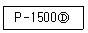
- 프로드법을 사용하여 교류 1500A 흐르게 하고 탈자를 하지 않음
- 프로드법을 사용하여 교류 1500A 흐르게 하고 탈자를 함
- 프로드법을 사용하여 직류 1500A 흐르게 하고 탈자를 하지 않음
- 프로드법을 사용하여 직류 1500A 흐르게 하고 탈자를 함
(정답률: 알수없음)
45. 보일러 및 압력용기에 대한 자분탐상검사(ASME Sec.V Art.7)에 따라 검사 절차서를 작성 할 때 다음 중 필수 변수에 포함되지 않아도 되는 것은?
- 자화방법
- 표면 전처리
- 검사자의 자격인정 요건
- 인정한 범위를 초과하는 피복두께
(정답률: 알수없음)
46. 보일러 및 압력용기에 대한 자분탐상검사(ASME Sec.V Art.25 SE-709)에 따라 탐상시 잔류자기 측정에 사용되는 홀 효과 프로브(Hall effect probe)는 다음 중 어느 자화법에서 발생한 자장을 측정하는데 주로 사용되는가?
- 극간법
- 코일법
- 프로드법
- 중심도체법
(정답률: 알수없음)
47. 철강 재료의 자분탐상 시험방법 및 자분모양의 분류(KS D0213)에 의하여 자분의 적용시기에 따라 시험방법을 분류한 것은 무엇인가?
- 잔류법
- 극간법
- 코일법
- 축통전법
(정답률: 알수없음)
48. 철강 재료의 자분탐상 시험방법 및 자분모양의 분류(KS D0213)에 규정된 용어 중 “시험품에 자속을 생 시키는데 사용하는 전류”를 의미하는 것은?
- 자화전류
- 정류
- 충격전류
- 교류
(정답률: 알수없음)
49. 철강 재료의 자분탐상 시험방법 및 자분모양의 분류(KS D0213)에 규정에 따라 3mm와 2.5mm 길이의 자분모양이 동일 직선상에 있고 자분모양간 거리는 1.5mm 라면 이 자분모양의 총 길이는 얼마인가?
- 2.5mm
- 3mm
- 5.5mm
- 7mm
(정답률: 알수없음)
50. 보일러 및 압력용기에 대한 자분탐상검사(ASME Sec.V Art.7)에서 길이 15인치, 직경 3인치인 시험체를 코일법으로 검사할 때 자화전류(A)의 범위로 가장 적당한 것은? (단, 코일은 5회 감겨 있다.)
- 400~600
- 700~900
- 900~1100
- 1400~1600
(정답률: 알수없음)
51. 보일러 및 압력용기에 대한 자분탐상검사(ASME Sec.V Art.7)에서 직류 시험계로 반파 정류전류를 측정하였다면 실제 측정값은 읽은 값에 몇 배를 해 주어야 하는가?
- 1
- 2
- 4
- 8
(정답률: 알수없음)
52. 보일러 및 압력용기에 대한 자분탐상검사(ASME Sec.V Art.25 SE 709)에서 규정한 습식자분용 링시험편에서 전파정류(FWDC) 자화전류가 1400A 일 때 시스템의 성능 확인을 위해 나타나야 할 표면하 최소 구멍수는?
- 3
- 4
- 5
- 6
(정답률: 알수없음)
53. 보일러 및 압력용기에 대한 자분탐상검사(ASME Sec.V Art.7)에 의거 중심도체를 사용하여 실린더형 제품의 구멍에 하나의 케이블을 관통하여 6000A 전류에서 적정한 자화강도를 얻었다면 3개의 관통 케이블을 사용하면 얼마의 자화전류(A)가 필요하겠는가?
- 2000
- 6000
- 9000
- 18000
(정답률: 알수없음)
54. 보일러 및 압력용기에 대한 자분탐상검사(ASME Sec.V Art.25 SE-709)에서 건식 자분을 사용할 때의 장점을 설명 한 것으로 틀린 것은?
- 습식법에 비해 시험속도가 빠른 장점이 있다.
- 습식법을 사용할 때 보다 제거가 용이한 장점이 있다.
- 반파정류 전류를 사용하여 상대적으로 깊은 내부결함 검출이 습식법보다 우수하다.
- 휴대용 자화장비를 사용하여 대형 시험체의 국부 자화가 용이한 장점이 있다.
(정답률: 알수없음)
55. 보일러 및 압력용기에 대한 자분탐상검사(ASME Sec.V Art.7)에 의거 다축자화법의 자계의 적정성을 확인하는데 적합한 것은?
- 인공결함심
- 홀소자
- 자장탐촉자
- 가우스미터
(정답률: 알수없음)
56. 원격 컴퓨터에서 파일을 송ㆍ수신하는데 사용하는 프로토콜로 옳은 것은?
- Gopher
- Finger
- FTP
- Telnet
(정답률: 알수없음)
57. 다음이 설명하고 있는 인터넷 보안 방식은?
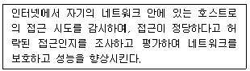
- Cache
- Web Cache
- Firewall
(정답률: 알수없음)
58. 라디오, Pager(호출기)와 같이 데이터를 한 쪽 방향으로만 전달하는 통신 방식은?
- 전이중 통신방식(Full-Duplex)
- 반이중 통신방식(Half-Duplex)
- 단방향 통신방식(Simplex)
- 직렬 전송방식(Serial Transmission)
(정답률: 알수없음)
59. 검색을 위한 자신만의 데이터베이스는 없고 다른 검색엔진에서 결과를 찾아서 사용자에게 보여주는 검색방식을 무엇이라고 하는가?
- 웹 인덱스 방식
- 키워드 방식
- 웹 디렉토리 방식
- 통합령 검색 방식
(정답률: 알수없음)
60. 네트워크 사용자들끼리 뉴스를 서로 주고받는 네트워크 뉴스 그룹은?
- WAIS
- Archie
- Usenet
- inter-casting
(정답률: 알수없음)
4과목: 금속재료학
61. 다음 중 쾌삭강(free cutting steel)의 피삭성을 증가 시키는 합금 원소는?
- C
- Si
- Ni
- Se
(정답률: 알수없음)
62. 순철이 Ac3에서 동소변태한 경우 이 때의 격자상수는 어떻게 되는가?
- 작아진다.
- 커진다.
- 변화가 없다.
- 가열속도에 따라 변화한다.
(정답률: 알수없음)
63. 공석강을 A1온도 이상으로 가열한 후 차차 온도를 떨어뜨리면서 각 온도에서 등온변태하였을 때의 반응생성물의 순서가 옳은 것은?
- Pearlite→Upper Bainite→Lower Bainite→Martensite→잔류 Austenite
- Martensite→Upper Bainite→Lower Bainite→Pearlite→잔류 Austenite
- Pearlite→잔류 Austenite→Lower Bainite→Martensite→Upper Bainite
- Martensite→Lower Bainite→Upper Bainite→잔류 Austenite→Pearlite
(정답률: 알수없음)
64. 다음 중 해드필드 강(hadfield steel)의 설명으로 옳은 것은?
- Austenite계 고 Mn 강이며, 가공경화성이 크다.
- Pearlite계 저 Mn 강이며, 가공경화성이 적다.
- Austenite계 고 Mg 강이며, 가공경화성이 크다.
- Pearlite계 저 Mg 강이며, 가공경화성이 적다.
(정답률: 알수없음)
65. 황동의 자연균열(season crack)을 방지하기 위한 방법을 설명한 것 중 틀린 것은?
- 도료나 아연도금을 한다.
- 응력제거 풀림을 한다.
- Sn 이나 Si 를 첨가한다.
- Hg 및 그 화합물을 첨가한다.
(정답률: 알수없음)
66. 열처리에서 질량효과(Mass effect)에 대한 설명으로 옳은 것은?
- 가열시간의 차이에 따라 재료의 내ㆍ외부가 뒤틀리는 현상
- 재료의 크기에 따라 담금질 효과가 다르게 나타나는 현상
- 시효처리의 일종으로서 재료가 크면 내부의 경도가 외부 경도에 비해 떨어지는 현상
- 뜨임현상의 일종으로서 뜨임 시간이 길어지면 재료 내ㆍ외부에 경도가 달라지는 현상
(정답률: 알수없음)
67. Al의 특징을 열거한 것 중 틀린 것은?
- 비중이 2.7 로서 가볍다.
- 내식성, 가공성이 좋다.
- 면심입방격자(FCC)이다.
- 지금(地金) 중의 Fe, Cu, Mn 등의 원소는 도전율을 좋게 한다.
(정답률: 알수없음)
68. 형상기억효과의 종류 중 전방위 형상기억에 대한 설명으로 옳은 것은?
- 일반덕인 일방향 형상기억합금이며, 오스테나이트상의 형상만을 기억하는 현상이다.
- 오스테나이트의 형상과 더불어 마텐자이트상이 변형 되었을 때의 형상도 기억하는 현상이다.
- 변형상태에서 시효시키면 나타나는 현상으로 온도에 따라 오스테나이트상으로부터 중간상을 거쳐 저온상으로 변태하며 이 때 마텐자이트 변태도 동반되는 현상이다.
- 열탄성 마텐자이트 변태에 기인하며 초탄성에 의한 형상기억 효과는 응력부하온도에 으존하는 현상으로 응력유기 마텐자이트가 외부응력이 제거되면서 오스테나이트로 변태함으로 생기는 현상이다.
(정답률: 알수없음)
69. 단면적 20mm2인 환봉을 인장시험한 그래프이다. A점에서의 단면적은 18mm2, B점에서의 단면적은 16mm2이었을 때 인장강도(kgf/mm2)는?
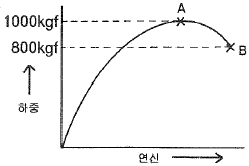
- 25
- 50
- 56
- 63
(정답률: 알수없음)
70. 탄소강 중에 존재하는 합금 원소가 기계적 성질에 미치는 영향을 설명한 것 중 옳은 것은?
- Mn은 강도를 증가시키나, 연신율의 증가로 경도를 감소시키고, 고온에서 소성을 감소시켜 주조성을 좋게 한다.
- Cu는 인장강도, 탄성한계를 높이나, 부식에 대한 저항성을 감소시킨다.
- Si는 입자의 크기를 증대시키며, 경도, 탄성한계 등을 높인다.
- 강 중의 S는 Mn과 결합하여, MnS를 만들고 저온 취성의 원인이 된다.
(정답률: 알수없음)
71. 탄소강과 합금강을 300℃ 부근에서 뜨임하면 최저 충격 에너지가 나타난다. 이러한 현상을 무엇이라 하는가?
- 청열취성
- 적열취성
- 시효경화
- 가공취성
(정답률: 알수없음)
72. 0.2% 탄소강이 723℃ 선상에서의 초석 ferrite와 pear-lite 양은 약 몇 % 인가? (단, 공석점의 탄소함량은 0.8% 이다.)
- 초석 Ferrite 75%, Pearlite 25%
- 초석 Ferrite 25%, Pearlite 75%
- 초석 Ferrite 55%, Pearlite 45%
- 초석 Ferrite 45%, Pearlite 55%
(정답률: 알수없음)
73. 백주철을 탈탄열처리하여 순철에 가까운 ferrite 기지로 만들어 연성을 갖는 주철은?
- 펄라이트가단주철
- 흑심가단주철
- 백심가단주철
- 구상흑연주철
(정답률: 알수없음)
74. 열팽창 계수가 대단히 작아 바이메탈에 사용되는 인바(Invar)는 철(Fe)에 Ni이 어느 정도 함유되어 있는가?
- 17%
- 23%
- 36%
- 47%
(정답률: 알수없음)
75. 연성과 전성이 좋은 황동으로써 색깔도 아름다우며 장식용 잡화나 악기 등의 재료로 쓰이고, 금박(金箔)의 대용으로 쓰이는 재료로서 Cu와 Zn이 8:2로 합금된 것은?
- 톰백(tombac)
- 문츠메탈(muntz metal)
- 하이 브라스(high brass)
- 카트리즈 브라스(cartridge brass)
(정답률: 알수없음)
76. 적색을 띤 회백색의 금속으로 비중이 9.75, 용융점이 265℃이며, 특히 응고할 때 팽창하는 금속은?
- Ce
- Bi
- Te
- In
(정답률: 알수없음)
77. 용융금속을 세공을 통하여 유출시켜 그 가느다란 흐름을 압력이 걸려있는 물, 공기 혹은 불활성 가스로 빠르게 끊어 금속분말을 제조하는 방법은?
- 분사법(atomization)
- 쇼팅(shotting)
- 스템핑(stamping)
- 그레이닝(graining)
(정답률: 알수없음)
78. 오스테나이트계 스테인리스강에 대한 설명으로 틀린 것은?
- 대표적인 조성은 18%Cr-8%Ni이다.
- 자성체이며, BCC의 결정구조를 갖는다.
- 오스테나이트조직은 페라이트조직보다 원자밀도가 높아 내식성이 좋다.
- 1100℃ 부근에서 급냉하는 고용화처리를 하여 균일한 오스테나이트조직으로 사용한다.
(정답률: 알수없음)
79. 다음 중 청동(Bronze)에 대한 설명으로 틀린 것은?
- 응고온도 범위가 넓은 Mushy형 응고를 한다.
- 청동은 구리(Gu)+안티몬(Sb)의 합금이다.
- 주석청동 주물의 용탕 유동성을 좋게 하기 위하여 Zn을 첨가하여 사용한다.
- 내해수성이 좋아 선박 등에 많이 사용하는 주석청동은 Admiralty gun metal 이라고 한다.
(정답률: 알수없음)
80. Mg 합금이 구조재료로서 갖는 특성을 설명한 것 중 틀린 것은?
- 소성가공성이 높아 상온변형이 쉽다.
- 비강도가 커서 항공우주용 재료에 유리하다.
- 감쇠능이 주철보다 커서 소음방지 재료로 우수하다.
- 기계가공성이 좋고 아름다운 절삭면이 얻어진다.
(정답률: 알수없음)
5과목: 용접일반
81. 용접봉의 용융속도를 가장 잘 설명한 것은?
- 단위시간당 소비되는 모재의 무게
- 단위시간당 소비된 용접봉의 길이 또는 무게
- 일정량의 모재가 소비될 때까지의 시간
- 일정길이의 용접봉이 소비될 때까지의 시간
(정답률: 알수없음)
82. 아크 쏠림의 방지 대책으로 틀린 것은?
- 아크 길이를 짧게 유지한다.
- 접지형 2개를 연결한다.
- 접지점을 될 수 있는 한 용접부 가까이 한다.
- 용접부가 긴 경우 백 스텝(Back Step)방법을 쓴다.
(정답률: 알수없음)
83. AW 500이고, 정격 사용율이 60%인 용접기로 400A의 전류로 용접한다면 허용 사용율은 약 몇 % 인가?
- 72
- 94
- 108
- 125
(정답률: 알수없음)
84. 양호한 용접이음을 위하여 외부에서 주어지는 열량은 충분해야한다. 아크전압 45V, 아크전류 120A, 용접속도가 200(mm/min)일 때 용접입열은?
- 14200 J/cm
- 15200 J/cm
- 16200 J/cm
- 17200 J/cm
(정답률: 알수없음)
85. 다음 중 서브머지드 아크 용접법의 장점 설명으로 틀린 것은?
- 용입이 깊다.
- 비드 외관이 매우 아름답다.
- 용융속도 및 용착속도가 빠르다.
- 적용재료에 제한을 받지 않는다.
(정답률: 알수없음)
86. 다음 물질 중에서 아세틸렌과 접촉하여도 폭발할 위험성이 없는 것은?
- 철(Fe)
- 동(Cu)
- 은(Ag)
- 수은(Hg)
(정답률: 알수없음)
87. 다음 중 가장 얇은 판이음에 적용되는 용접 홈은?
- H형홈
- X형홈
- V형홈
- I형홈
(정답률: 알수없음)
88. 용접부를 피닝(peening)하는 주된 목적은?
- 녹 제거
- 잔류 응력의 경감
- 용접 불량의 검사
- 크레이터 균열 방지
(정답률: 알수없음)
89. 아크 용접 중에 아크가 중단되어 비드가 오목하게 나타나는 현상을 무엇이라 하는가?
- 크레이터
- 언더 컷
- 오버 랩
- 스패터
(정답률: 알수없음)
90. 용접중 용착법의 순서를 다음과 같이 용접길이를 정해놓고 번호순으로 용접하는 경우를 무엇이라 하는가?
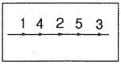
- 대칭법
- 후퇴법
- 전진법
- 비석법
(정답률: 알수없음)
91. 산소-아세틸렌 절단과 비교한 산소-프로판(LP) 가스 절단의 설명으로 잘못된 것은?
- 절단 상부 기슭이 녹은 것이 적다.
- 절단면이 미세하며 깨끗하다.
- 슬래그 제거가 쉽다.
- 후판절단시 아세틸렌보다 느리다.
(정답률: 알수없음)
92. 직류 아크 용접에서 모재를 양극(+), 용접봉을 음극(-)에 연결한 극성은?
- 정극성
- 역극성
- 용극성
- 비용극성
(정답률: 알수없음)
93. 피복 아크 용접봉의 피복제에 습기가 있을 경우 용접시 발생하기 쉬운 대표적인 결함은?
- 언더 컷
- 용입불량
- 오버 랩
- 가공
(정답률: 알수없음)
94. 각 장치가 유기적인 관계를 유지하면서 미리 정해 놓은 시간적 순서에 따라 순차적으로 제어하는 제어 방법은?
- 시퀀스 제어
- 피드백 제어
- 수동 제어
- 온 오프 제어
(정답률: 알수없음)
95. 다음 피복 아크 용접봉 중에서 작업성은 나쁘나, 기계적 성질, 내균열성이 가장 좋은 용접봉은?
- 티타니아계 용접봉
- 고셀룰로스계 용접봉
- 일미나이트계 용접봉
- 저수소계 용접봉
(정답률: 알수없음)
96. 레이저 용접의 특징에 대한 설명으로 틀린 것은?
- 용접재의 기계적 성질에 많은 변화를 준다.
- 광선이 용접의 열원이다.
- 열의 영향범위가 좁다.
- 원격 조작이 용이하다.
(정답률: 알수없음)
97. 연납용 용제는 어느 것인가?
- 염화아연
- 붕사
- 붕산염
- 염화물
(정답률: 알수없음)
98. 초음파 탐상시험을 양쪽에서 할 때의 기호로 적당한 것은?
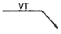
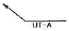
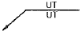
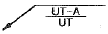
(정답률: 알수없음)
99. 일명 충돌용접이라도고 하며 극히 짧은 지름의 용접물 접합에 사용되고 전원으로 축전된 직류를 사용하는 용접법은?
- 만능 심 용접
- 업셋 용접
- 퍼커션 용접
- 플래시 버트 용접
(정답률: 알수없음)
100. 높은 진공 속에서 용접을 진행하므로 대기와 반응하기 쉬운 재료도 용접이 가능한 용접법은?
- 초음파 용접
- 전자빔 용접
- 프라즈마 용접
- 레이져 용접
(정답률: 알수없음)
맥류는 교류 성분이 포함된 전류를 사용하여 검사하는 비파괴 검사 방법 중 하나입니다. 연속법과 잔류법 모두에 사용이 가능하며, 표면결함과 표면 근방의 내부 결함을 검출할 수 있습니다. 교류 성분이 충분히 많은 경우에는 표피효과가 상쇄되어 내부 결함의 검출능력이 우수해집니다.